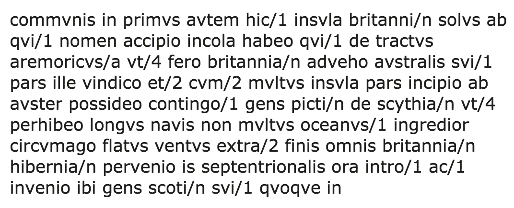

The annotated text tab features a full re-creation of the original corpus, allowing the user to examine topics in the context of the corpus itself. Hover over any word to dynamically highlight all words in that topic, or select up to 3 topics for fixed highlighting. If the original input document included punctuation and capitalization (i.e. a .txt file), then these features get loaded into the annotated text as well.
Text Exploration
Our app reconstructs the original text with information about each of its words. Mouse over any word to learn its topic assignment or if it was filtered out as a stopword. Any word in the same topic as the moused over word will also be highlighted.

Topic Highlighting
The user can select up to 3 different topics at a time to inspect within the text. Every word within one of these topics will be highlighted with the same color.

Heatmap Scrollbar
A heatmap representing a topic of the user's choice is to the right of the text. Clicking on it will take the user to the corresponding location within the text. The app automatically assigns pages to the text so the user can jump between sections.